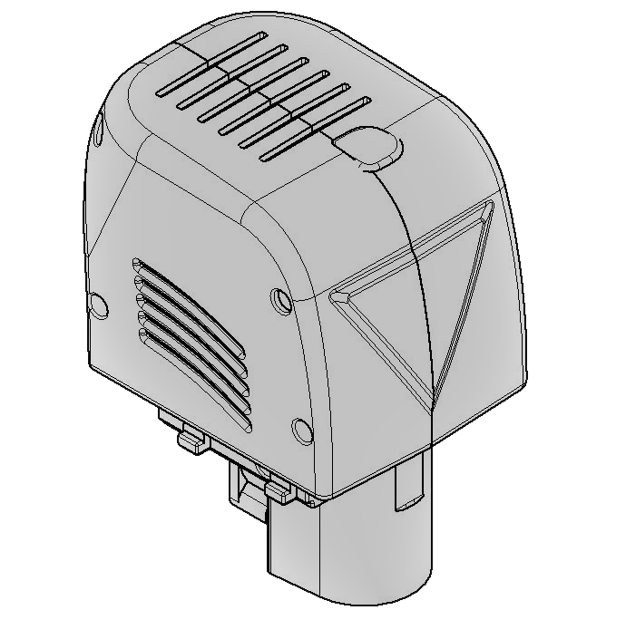

Milestone 2016 Recap
Last Saturday at the National museum of Science and Technology Leonardo Da Vinci in the heart of Milan, FABtotum has officially presented the new FABtotum CORE: the all-in-one 3D printer, can incorporate 3D Printing, CNC Milling, Scanning and now Laser engraving.
“The FABtotum personal Fabricator CORE is the result of more than 2 years of development and improvements of the first product. It’s a milestone for us and source of pride” said Marco.
“With CORE we are refining the user experience and giving customers the best possible tool for multipurpose rapid prototyping and manufacturing” continues.
The FABtotum CORE is available for purchase on the FABtotum store: each customer can pick the add-ons to include and customize the platform to suit his/her needs.

Present vs Past: functionalities and modularity
The FABtotum CORE keeps the basic functionalities (3D printing, Milling, Scanning) and the modular concept of the previous model, which is made possible by swapping the addon heads. It as well retains backward compatibility with all units. If an upgrade is needed/wanted, the Team will assist all requests.
It improves efficiency and speed by all-new electronics, newer printing heads and build surfaces, as well as new built-in software.
Higher performance, higher speeds
The FABtotum CORE is several times faster than the precedessor owing to the introduction of the onboard Quad Core RPI computer board, namely the RaspberryPi3.
Printing times and speeds have also been increased thanks to newer electronics: our Totumduino is now at its V2.
Colibri: more than just a new Software, it’s an OS
The FABUI, the web based interface, can be accessed via LAN, Wifi and remotely on a browser. But the big news is that every FABtotum (not only COREs, just every unit) will soon also be equipped with the new FABUI Colibri, the brand new Operating System internally developed as the first operating system built from the ground up for 3D printing.
FABUI Colibri will dramatically improve the speed of the system even further and add full filestystem recovery and networking improvements.

Laser Head, PRISM & More: other products announcements
FABtotum has also presented the Laser Head Module, available from early 2017: the new add on is capable of precise PCB engraving, paper and stencils cutting as well as engraving images on wood or some alloys. The Laser Head will be available in January 2017 on the Fabtotum online Store.
A separate blog update will be dedicated to this module soon.
During the Milestone presentation we also talked about the PRISM stereolithography platform: the Team is working and investing on new materials and procedures with renowned University labs to bring this new technology to the market in the near future.
We as the FABteam would like to thank everyone who have been with us during these years.
Keep following us,
Marco & the Team


{kind=link}
{kind=link}
{kind=link}
{kind=link}
{kind=link}
{kind=link}
{kind=link}
{kind=link}
{kind=link}